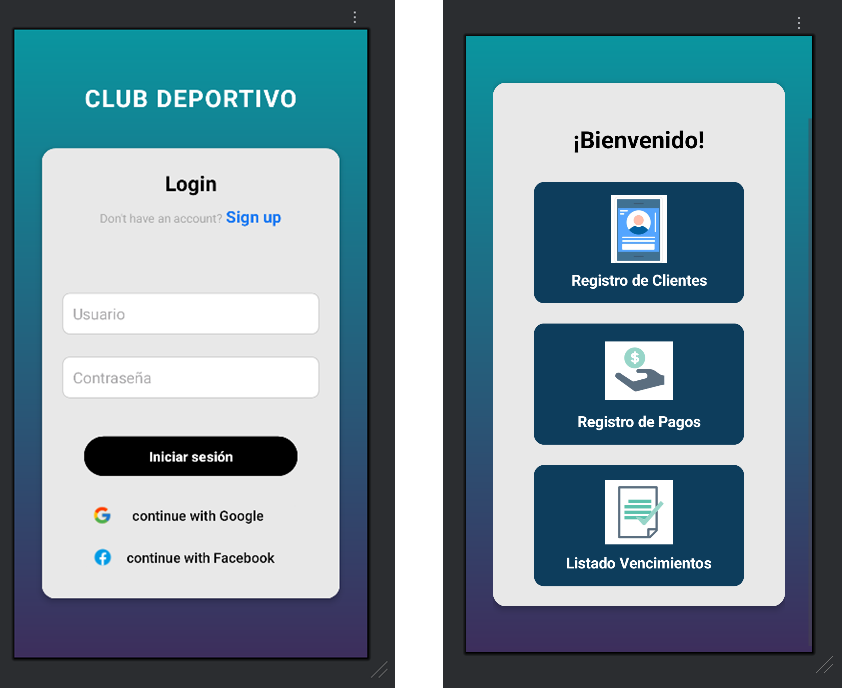

App de Gestión de Club Deportivo
Aplicación móvil desarrollada en Android Studio utilizando Kotlin para administrar el registro de socios, pagos y actividades del club. Implementación de SQLite para la base de datos y RecyclerView para la visualización de usuarios y rutinas.
Ir a GitHub ➔